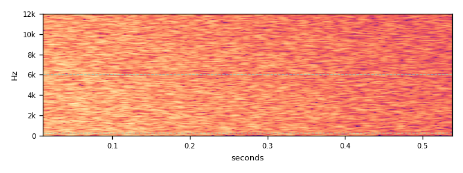
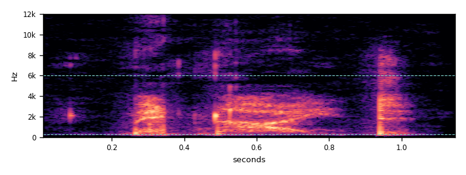
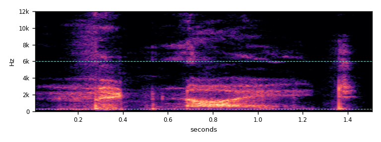
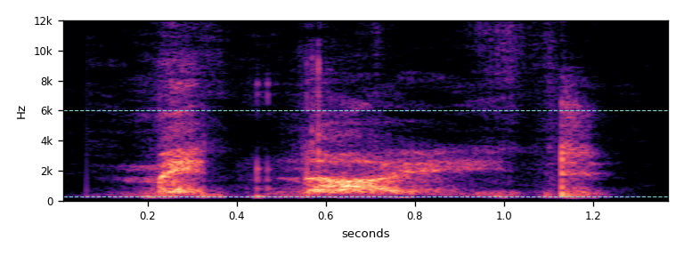
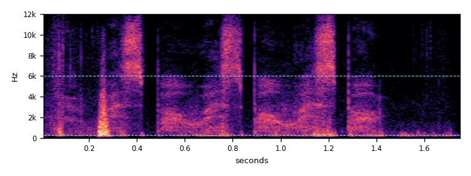
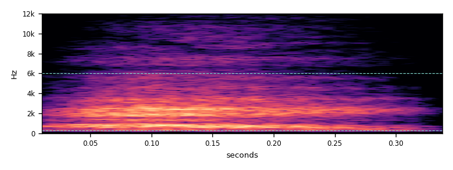
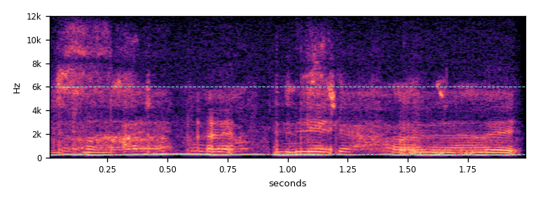
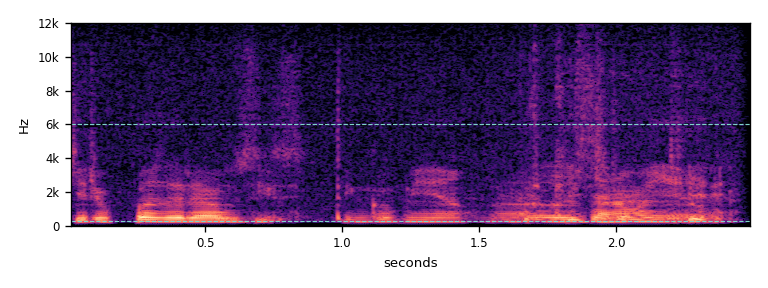
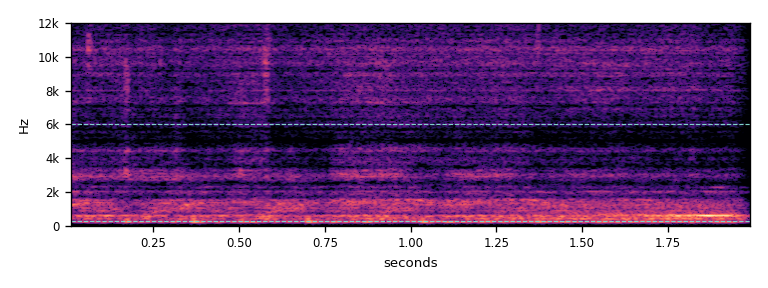
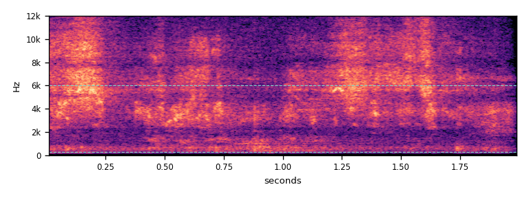

The placeholder
Rendered exactly as RoomSoundPresenter builds it: 0.55 s of white noise with a light smoothing filter and a fade. Played here at its in-game level.

Real whispers
Every clip is one phrase, mono, 44.1 kHz WAV, normalised to −26 LUFS. Two speakers. Dashed lines on the spectrograms mark 300 Hz and 6 kHz: a whisper's energy should sit between them.





How it would sound in the room
The game plays the whisper as a 3D one-shot (linear roll-off, 1 to 24 m) at the effects volume. These two use a whisperer 4 m away. That means the game's distance drop (×0.87), a soft cut above 6.5 kHz for distance, and a small hard-walled room tail (0.5 s, 13 dB under the voice). The game has no reverb today. The tail is a suggestion and could be baked into the clips. Today the sound plays from the centre of the sector, 1 m above the floor. When it is integrated, it will play from the student who is whispering.
The numbers
A real whisper has four signs. Its energy sits mostly in the speech band (0.3–6 kHz). It has no pitch, because the vocal cords do not vibrate. Its loudness rises and falls in syllables, about 3–6 per second. It lasts about as long as a phrase. "Pitched" is the share of frames with a clear pitch period: a normal spoken sentence scores 65%, the same sentence whispered 4%, and noise 0%. Green values pass, red values fail.
| Clip | Length s | LUFS | Peak dBFS | Centre Hz | <300 Hz | 0.3–6 kHz | >6 kHz | Pitched | Syllables | Syll/s |
|---|---|---|---|---|---|---|---|---|---|---|
| Placeholder | 0.55 | −28.3 | −21.2 | 8644 | 3% | 40% | 58% | 0% | 0 | 0.0 |
| A | 1.16 | −26.0 | −3.2 | 1634 | 2% | 98% | 0% | 0% | 3 | 5.1 |
| B | 1.52 | −26.0 | −8.3 | 1108 | 1% | 99% | 0% | 10% | 4 | 4.8 |
| C | 1.38 | −26.0 | −7.7 | 1165 | 1% | 99% | 0% | 8% | 3 | 4.3 |
| D | 1.76 | −27.1 | −3.2 | 1464 | 23% | 68% | 9% | 6% | 8 | 8.2 |
| Short "hey" | 0.35 | −26.0 | −10.3 | 1456 | 0% | 100% | 0% | 7% | 1 | 3.3 |
| 377743 | 2.00 | −26.0 | −11.6 | 712 | 54% | 44% | 1% | 76% | 5 | 2.6 |
| 446580 | 2.50 | −27.5 | −10.1 | 523 | 13% | 87% | 0% | 69% | 8 | 4.1 |
| 540060 | 2.00 | −26.0 | −8.1 | 764 | 15% | 84% | 2% | 18% | 2 | 1.0 |
| 143902 | 2.00 | −26.0 | −9.1 | 5814 | 0% | 61% | 39% | 0% | 6 | 3.0 |
Every clip was cut to one phrase. Each then went through a 220 Hz high-pass (removes rumble, hum and breath pops; a whisper has no pitch to lose) and a 12 kHz low-pass (removes preview-encoding fizz). It got a 20 ms fade in and a 50–80 ms fade out, was mixed to mono at 44.1 kHz and set to −26 LUFS (ITU BS.1770). Single clicks above −3 dBFS were held down by a 5 ms limiter. D keeps the most clicks, so it sits 1 LU lower. The sources are Freesound's public MP3 previews. Before shipping, swap in the original WAVs (a free login, same CC0 licence) and apply the same edits.
Tried and dropped
All CC0 and all labelled "whisper". The measurements show why each one does not fit.




Recommendation
- Ship A, B, C and D as a set of four. Pick one at random each time, never the same one twice in a row. Add a small random pitch change (±4%) so four clips feel like more.
- Now and then (about 1 in 5), use the short "hey" instead.
- If one clip has to stand alone, use A. It has no pitch at all, its syllables come at a natural speed, and it is short.
- Keep them at −26 LUFS. That is 2 dB above the placeholder, so the effects mix may need a small trim.
- Play from the whispering student, not the sector centre. Consider baking in the small room tail (see "in the room").
- These were measured, not listened to. Check by ear that no word is clear enough to understand.
Licence
Every recording is CC0 1.0 (public domain), so it ships with no credit required. The credits here are a courtesy.
| Used as | Freesound file | Author | Cut (s) |
|---|---|---|---|
| A | 362503 Whispering Midnight.wav | balloonhead | 5.92–7.08 |
| B | 362503 Whispering Midnight.wav | balloonhead | 1.90–3.42 |
| C | 362503 Whispering Midnight.wav | balloonhead | 7.60–8.98 |
| D | 620041 Whisper.wav | AlexMiller2000 | 0.36–2.12 |
| Short | 849127 Hey Whisper | qubodup | whole |